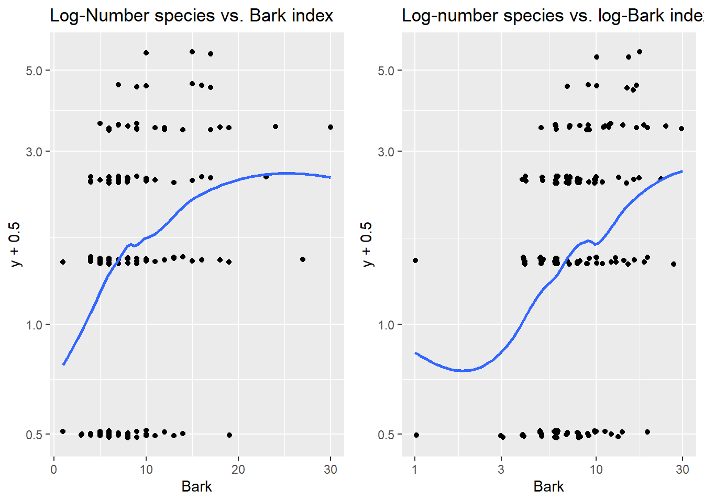
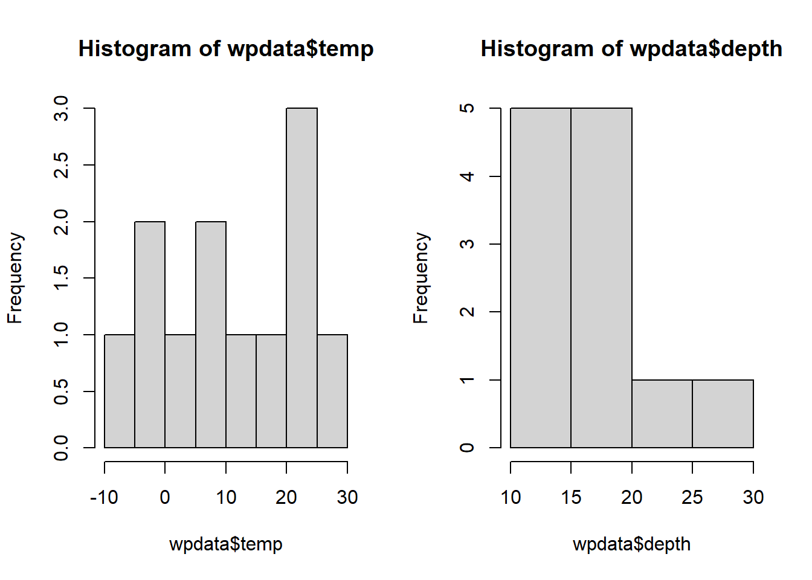
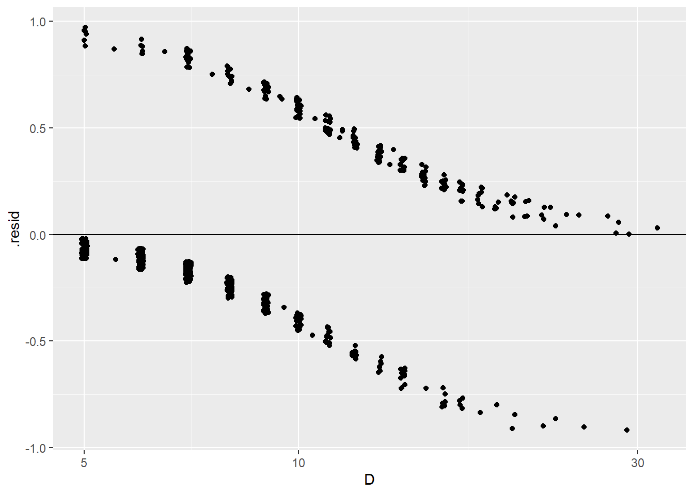

Chapter 4 Logistic Regression
This chapter covers material from chapters 20-21 of Sleuth.
4.1 The variables
Suppose we have a categorical response variable \(Y\) that can take one of two values, which we will generically call a success or failure. We want to relate the probability of success to \(p\) explantory variables (aka predictors, covariates) \(x_1, \dotsc, x_p\). There is no restriction on the type of covariates, they can be both quantitative and categorical variables.
4.1.1 Example: Donner party EDA
Sleuth case study 20.1 looks at data from the infamous Donner party. This wagon train was migrating to the west coast of the US in the mid-1800s and became snow-bound in the Sierra Nevada mountains during the winter of 1846-7. We are interested in modeling the categorical variable “survival” (or not) as a function of individual covariates like age or sex.
> library(Sleuth3)
> donner <- case2001
> summary(donner)
## Age Sex Status
## Min. :15.0 Female:15 Died :25
## 1st Qu.:24.0 Male :30 Survived:20
## Median :28.0
## Mean :31.8
## 3rd Qu.:40.0
## Max. :65.0A stacked bar graph shows that females had a higher surival rate than males:
> library(ggplot2)
> ggplot(donner, aes(fill = Status, x = Sex)) +
+ geom_bar(position="fill") +
+ labs(y="proportion", title="Surival rates by Sex")
We can use the dplyr package’s group_by function to divide the data into the two Sex groups and compute the proportion who Survived within each group. Here we see that 2/3 of females survived while only 1/3 of males survived.
> library(dplyr)
> donner %>%
+ group_by(Sex) %>% # for each Sex group
+ summarize(mean(Status == "Survived")) # proportion who survived
## # A tibble: 2 x 2
## Sex `mean(Status == "Survived")`
## <fct> <dbl>
## 1 Female 0.667
## 2 Male 0.333A side-by-side boxplot shows that people who survived tended to be younger:
> library(ggplot2)
> ggplot(donner, aes(x = Status, y = Age)) +
+ geom_boxplot() +
+ coord_flip()
We can get stats by status group:
> donner %>%
+ group_by(Status) %>% # for each status group
+ summarize(mean(Age), sd(Age), median(Age)) # get summary stats
## # A tibble: 2 x 4
## Status `mean(Age)` `sd(Age)` `median(Age)`
## <fct> <dbl> <dbl> <dbl>
## 1 Died 35.5 14.3 30
## 2 Survived 27.2 8.00 25But these stats are not quite what we want when trying to model survival as a function of age. E.g. of people who survived, we know that the mean age was 27.2 while of people who died, the mean age was 35.5. But this is the wrong direction of conditioning, we would like to say how survival rates change as we increase age by a year, for example. We could employ a scatterplot for this purpose, but we need to recode (in dplyr) Status into a binary variable that recodes survival as a 1 and death as a 0:
> donner$Ind_surv <- recode(donner$Status, Survived = 1, Died = 0)Then use a jitter plot to avoid overplotting:
> ggplot(donner, aes(x = Age, y = Ind_surv)) +
+ geom_jitter(aes(color=Status), height = .01) 
As we increase age, try vertically “slicing” these points. The proportion of survivals in these similar age groups will just be the mean of the binary 0’s and 1’s in each slice. We have more blue points than red in the low age slices than in high age, so we see that the probability of survival tends to decrease as age increases. We will next consider how to construct a model that gives us a “best fit” curve for this probability of surival.
4.2 The Bernoulli distribution
The Bernoulli distribution is a probability model for a random trial that has two possible outcomes: success or failure. A Bernoulli random variable \(Y\) “counts” the number of successes in a Bernoulli random trial. If a “success” occurred then \(Y=1\) and if a “failure” occurred then \(Y=0\).
We will let \(\pi\) be the probability of success: \[ \pi = P(Y=1) = P(success), \ \ \ \ \ 1-\pi = P(Y=0) = P(failure) \] If \(Y\) is a Bernoulli random variable, then we can use the shorthand notation \(Y \sim Bern(\pi)\) to denote this.
The expected value, or mean, of \(Y\) is equal to \[ E(Y) = \mu = \pi \] and the standard deviation of \(Y\) is equal to \[ SD(Y) = \sigma = \sqrt{\pi(1-\pi)} \] The expected value (or mean) of a random variable measures the “long run” average value that we would see from \(Y\) if we were to repeat the random trial many, many times. The standard deviation tells us how these values of \(Y\) will vary over these repeated trials.
4.3 The logistic model form
The population, or data generating, model for a logistic regression model for \(Y\) assumes that each \(Y_i\) is a Bernoulli random variable whose probability of success depends on covariates \(\pmb{x_{1,i}, \dotsc, x_{p,i}}\). Specifically,
- \(Y_i \mid X_i \overset{indep.}{\sim} Bern(\pi(X_i))\)
- binary response: \(Y_i\)’s are categorical with only two options
- independence: Given \(X_i\) values, \(Y_i\)’s are independent
We connect the linear combination of predictors \[ \eta_i = \beta_0 + \beta_1 x_{1,i} + \dotsm + \beta_p x_{p,i} \] to the probability of success using the logistic function form: \[ \pi(X_i) = \dfrac{e^{\eta_i}}{1 + e^{\eta_i}} = \dfrac{e^{\beta_0 + \beta_1 x_{1,i} + \dotsm + \beta_p x_{p,i}}}{1 + e^{\beta_0 + \beta_1 x_{1,i} + \dotsm + \beta_p x_{p,i}}} \]
This function form is used because its inverse is equal to \[ \eta_i = \beta_0 + \beta_1 x_{1,i} + \dotsm + \beta_p x_{p,i}= \ln \left( \dfrac{\pi(X_i)}{1-\pi(X_i)}\right) \] This function is called the logit function: \(logit(\pi) = \ln \left( \dfrac{\pi}{1-\pi}\right)\). This means that a one unit increase in \(x_1\) can be interpreted as an additive \(\beta_1\) change in in the logit function, holding other terms fixed. But what does this mean?
The odds of success is defined as the ratio of the probability of success to the probability of failure: \[ odds = \dfrac{\pi(X)}{1-\pi(X)} \] For example, if the probability of success is 0.6 then the odds of success is \(0.6/0.4 = 1.5\). Meaning for every 6 successes, we see 4 failures. If the probability of success is 0.1, then the odds of success is \(0.1/0.9 \approx 0.111\), meaning for every 1 success we see 9 failures. Odds greater than 1 indicate the probability of success is above 50% while odds less than 1 indicate the probability of success is less than 50%.
So, we now can see that the logit function equals the log-odds of success: \[ \ln \left( \dfrac{\pi(X_i)}{1-\pi(X_i)}\right) = \beta_0 + \beta_1 x_{1,i} + \dotsm + \beta_p x_{p,i} \] This model form is an example of a generalized linear model which relates the response \(Y\) to predictors through a linear combination \(\eta\) of predictors. Is does this by defining the following functions:
- The kernel mean function defines the expected value (mean) of \(Y\) as a function of \(\eta\).
- in a logistic model, the kernel mean function is the logistic function \(E(Y \mid X) = \pi(X) = \dfrac{e^{\eta}}{1+e^{\eta}}\)
- The link function defines the linear combination \(\eta\) as a function of the mean of \(Y\).
- in a logistic model, the link function is the logit function \(\eta = \ln(\pi/(1-\pi))\)
- These two functions are inverses of one another.

4.3.1 Interpretation
Changes in predictors can be interpreted as changes in the odds of success (we can’t make general statement about changes in the probability of success). Specifically, we “unlog” the logit equation to get an expression for the odds of success for predictors \(x_1, \dotsc, x_p\): \[ odds(x_1, \dotsc, x_p) = \dfrac{\pi(X)}{1-\pi(X)} = e^{\beta_0 + \beta_1 x_{1} + \dotsm + \beta_p x_{p}} \]
What happens if we increase \(x_1\) by one unit, holding other predictors fixed? \[ odds(x_1+1, \dotsc, x_p) = e^{\beta_0 + \beta_1 (x_{1}+1) + \dotsm + \beta_p x_{p}} = e^{\beta_0 + \beta_1 x_{1} + \dotsm + \beta_p x_{p}} \times e^{\beta_1} \] Increasing \(x_1\) by one unit has a multiplicative change of \(e^{\beta_1}\) in the odds of success. Note that this is a similar interpretation to the exponential model in SLR or MLR.
The multiplicative change of \(e^{\beta_1}\) is also called the odds ratio for a one unit increase in \(x_1\). An odds ratio is just the ratio of the odds for two different groups, here groups with \(x_1+1\) vs. \(x_1\): \[ \dfrac{\textrm{odds of succes at } x_1+1}{\textrm{odds of succes at } x_1} = \dfrac{odds(x_1+1, \dotsc, x_p) }{odds(x_1, \dotsc, x_p) } = e^{\beta_1} \]
What is we have a predictor that is logged? \[ odds(x_1, \dotsc, x_p) = e^{\beta_0 + \beta_1 \ln(x_{1}) + \dotsm + \beta_p x_{p}} = e^{\beta_0}x_1^{\beta_1} e^{\beta_2 x_2 + \dotsm + \beta_p x_{p}} \]
Then our interpretation is similar to a power model. Changing \(x_1\) by a factor of \(m\): \[ odds(mx_1, \dotsc, x_p) = e^{\beta_0}(mx_1)^{\beta_1} e^{\beta_2 x_2 + \dotsm + \beta_p x_{p}} = e^{\beta_0}x_1^{\beta_1} e^{\beta_2 x_2 + \dotsm + \beta_p x_{p}} \times m^{\beta_1} \] results in a multiplicative change of \(m^{\beta_1}\) in the odds of success.
4.4 Inference and estimation
Estimation of logistic model parameters \(\beta_0, \dotsc, \beta_p\) is done using maximum likelihood estimation (MLE). The likelihood function is the probability of the observed data, writen as a function of our unknown \(\beta\)’s *(which are used to compute \(\pi(X_i)\)’s) \[ L(\beta) = \prod_{i=1}^n \pi(X_i)^{y_i} (1-\pi(X_i))^{1-y_i} \] Notice that for each case \(i\), the term in this product is equal to just \(\pi(X_i)\) when case \(i\) is a success (\(y_i=1\)) and equal to \(1-\pi(X_i)\) when case \(i\) is a failure (\(y_i=0\)).
Our MLE method says to find the \(\beta\)’s that maximize the likelihood \(L(\beta)\) of the observed data. Unlike SLR or MLR, there is no “closed form” for these MLE \(\hat{\beta}_i\) estimates (meaning we can’t write down a formula for the estimates). Rather, software uses a numerical optimization method to compute the MLEs \(\hat{\beta}_i\) and the standard errors \(SE(\hat{\beta}_i)\). (The R function glm uses Iterative reweighted least squares.)
These MLE estimates of \(\beta\) parameters are approximately normally distributed and unbiased when n is “large enough.” Much like with “intro stats” inference, when your response variable is categorical (or, equivalently, binary 0/1), we usually use the normal distribution for inference (CI and tests). When your response variable is quantitative (like in SLR/MLR models), we usually use the t-distribution for inference.
4.4.1 Confidence intervals for \(\pmb{\beta_i}\)
A \(C\)% confidence interval for \(\beta_i\) equals \[ \hat{\beta}_i \pm z^*SE(\hat{\beta}_i) \] where \(z^*\) is the \((100-C)/2\) percentile from the \(N(0,1)\) distribution.
4.4.2 Hypothesis tests for \(\pmb{\beta_i}\)
We can test the hypothesis \[ H_0: \beta_i = \beta^*_i \] with the following z-test statistic: \[ z =\dfrac{\hat{\beta}_i - \beta^*_i}{SE(\hat{\beta}_i)} \] where \(\beta^*_i\) is our hypothesized value of \(\beta_i\) . The \(N(0,1)\) is used to compute the p-value that is appropriate for whatever \(H_A\) is specified.
The usual test results given by standard regression output tests whether a parameter value (intercept or slope) is equal to 0 vs. not equal to 0: \[ H_0: \beta_i = 0 \ \ \ \ \ H_A: \beta_i \neq 0 \] with a test stat of \[ z =\dfrac{\hat{\beta}_i - 0}{SE(\hat{\beta}_i)} \]
4.4.3 R glm
We fit a logistic regression model in R with the glm function. The basic syntax is
glm(y ~ x1 + x2, family = binomial, data= )Careful not to forget the family=binomial argument! If you omit this, you will just be trying to fit a regular MLR model which is not appropriate for a categorical response.
The variable y can be either form:
ycan be binary 0/1 coded response where1is a “success”ycan be afactorvariable with two levels. The second level is what R will call a “success”
Once you fit a glm model, you can extract attributes of the model
fitted(my.glm)gives the estimated probabilities of success for each case in your datapredict(my.glm)gives estimated log-odds of success for each case in your data. Addnewdata=to get predicted log-odds for new data.predict(my.glm, type = "response")gives estimated probabilities of success for each case in your data. Addnewdata=to get predicted log-odds for new data.
The broom package also allows us to get fitted probabilities or log odds for all cases in the data, or for new data:
augment(my.glm)gets estimated log-odds of success added to the variables used in theglmfit.- add
data=my.datato get estimated log-odds added to the full data setmy.dataused in theglmfit - add
newdata= new.datato get predicted log-odds added to the new data setnew.data
- add
augment(my.glm, type.predict= "response")gets estimated probabilities of success added to the variables used in theglmfit.- add
data=my.datato get estimated probabilities added to the full data setmy.dataused in theglmfit - add
newdata= new.datato get predicted probabilities added to the new data setnew.data
- add
4.4.4 Example: Donner party model
Let’s revist the Donner party data and start with considering the logistic regression of survival status on age (only). We can add the fitted logistic model probability curve the scatterplot we created in Section 4.1.1. We use the glm smoothing method with an args that specifies the binomial family:
> ggplot(donner, aes(x = Age, y = Ind_surv)) +
+ geom_jitter(aes(color=Status), height = .01) +
+ geom_smooth(method="glm", method.args = list(family=binomial), se=FALSE) +
+ labs(y = "probability of survival")
We can see that an age of about 30 yields an estimated survival probability of 50% while an age of about 45 yields an estimated survival probability of 25%. We can better quantify these values by fitting the model using the glm function.
Here is our simple model, the logistic regression of survival on age: \[ logit(\pi) = \log(\dfrac{\pi}{1-\pi}) = \beta_0 + \beta_1 Age \]
> levels(donner$Status) # second level = Surived
## [1] "Died" "Survived"
> donner.glm1 <- glm( Status ~ Age , family=binomial, data=donner)
> summary(donner.glm1)
##
## Call:
## glm(formula = Status ~ Age, family = binomial, data = donner)
##
## Deviance Residuals:
## Min 1Q Median 3Q Max
## -1.5401 -1.1594 -0.4651 1.0842 1.7283
##
## Coefficients:
## Estimate Std. Error z value Pr(>|z|)
## (Intercept) 1.81852 0.99937 1.820 0.0688 .
## Age -0.06647 0.03222 -2.063 0.0391 *
## ---
## Signif. codes: 0 '***' 0.001 '**' 0.01 '*' 0.05 '.' 0.1 ' ' 1
##
## (Dispersion parameter for binomial family taken to be 1)
##
## Null deviance: 61.827 on 44 degrees of freedom
## Residual deviance: 56.291 on 43 degrees of freedom
## AIC: 60.291
##
## Number of Fisher Scoring iterations: 4
> confint(donner.glm1)
## 2.5 % 97.5 %
## (Intercept) -0.005987258 3.99016010
## Age -0.139737905 -0.01016096The estimated log odds of survival is \[ logit(\hat{\pi}) = \dfrac{\hat{\pi}}{1-\hat{\pi}} = 1.81852 -0.06647 Age \] and the estimated odds of survival is \[ \hat{odds}(age) = \dfrac{\hat{\pi}}{1-\hat{\pi}} = e^{1.81852}e^{-0.06647 Age} \] and the estimated probability of survival is \[ \hat{\pi}(age) = \dfrac{e^{1.81852 -0.06647 Age}}{1+e^{1.81852 -0.06647 Age}} \]
A one year increase in age will have a \(e^{-0.06647} = 0.936\) multiplicative change on the odds of survival. A one year increase in age decreases the odds of survival by 6.4% (95% CI 0.3% to 12.2%).
> exp(-0.06647) # factor change
## [1] 0.935691
> 100*(exp(-0.06647) - 1) # percent change
## [1] -6.430901
> exp(-0.06647 + c(-1,1)*qnorm(0.975)*0.03222) # factor change CI
## [1] 0.8784291 0.9966855
> 100*(exp(-0.06647 + c(-1,1)*qnorm(0.975)*0.03222) - 1) # % change CI
## [1] -12.1570864 -0.3314455The broom package’s tidy function can also be used to get estimates, SEs and confidence intervals. If we add exponentiate=TRUE, then we we get exponentiated estiamtes and confidence intervals (but SE, test stat and p-values are untouched).
> library(broom)
> tidy(donner.glm1, conf.int=TRUE)
## # A tibble: 2 x 7
## term estimate std.error statistic p.value conf.low conf.high
## <chr> <dbl> <dbl> <dbl> <dbl> <dbl> <dbl>
## 1 (Intercept) 1.82 0.999 1.82 0.0688 -0.00599 3.99
## 2 Age -0.0665 0.0322 -2.06 0.0391 -0.140 -0.0102
> tidy(donner.glm1, conf.int=TRUE, exponentiate = TRUE)
## # A tibble: 2 x 7
## term estimate std.error statistic p.value conf.low conf.high
## <chr> <dbl> <dbl> <dbl> <dbl> <dbl> <dbl>
## 1 (Intercept) 6.16 0.999 1.82 0.0688 0.994 54.1
## 2 Age 0.936 0.0322 -2.06 0.0391 0.870 0.990We can use the predict command with response type values to get predicted survival rates for 30 and 45 year olds:
> new.ages <- data.frame(Age = c(30, 45))
> predict(donner.glm1, newdata = new.ages, type="response")
## 1 2
## 0.4562149 0.2363774
> exp(1.81852 - 0.06647*30)/(1+exp(1.81852 - 0.06647*30)) # prob age=30
## [1] 0.4562174
> exp(1.81852 - 0.06647*45)/(1+exp(1.81852 - 0.06647*45)) # prob age=45
## [1] 0.2363799So we have \[ \hat{\pi}(age = 30) = \dfrac{e^{1.81852 -0.06647(30)}}{1+e^{1.81852 -0.06647(30)}} \approx 0.456 \] and \[ \hat{\pi}(age = 45) = \dfrac{e^{1.81852 -0.06647(45)}}{1+e^{1.81852 -0.06647(45)}} \approx 0.236 \]
Finally, what if we want to understand how the odds of death change as a function of age? Well, odds of death is equal to the ratio death to survival probabilities: \[ \hat{odds.death}(age) = \dfrac{1-\hat{\pi}}{\hat{\pi}} = \dfrac{1}{e^{1.81852}e^{-0.06647 Age}} = e^{-1.81852}e^{0.06647 Age} \] A one year increase in age will have a \(e^{0.06647} = 1.069\) multiplicative change on the odds of survival. A one year increase in age increases the odds of death by 6.9% (95% CI 0.3% to 13.8%).
> exp(0.06647) # factor change in odds of death
## [1] 1.068729
> 100*(exp(0.06647) - 1) # percent change
## [1] 6.87289
> exp(0.06647 + c(-1,1)*qnorm(0.975)*0.03222) # factor change CI
## [1] 1.003325 1.138396
> 100*(exp(0.06647 + c(-1,1)*qnorm(0.975)*0.03222) - 1) # % change CI
## [1] 0.3325478 13.8395756We can verify our mathematical work by refitting a glm with an indicator of death:
> donner$Ind_death <- recode(donner$Status, Survived = 0, Died = 1)
> tidy(glm(Ind_death ~ Age, family = binomial, data=donner))
## # A tibble: 2 x 5
## term estimate std.error statistic p.value
## <chr> <dbl> <dbl> <dbl> <dbl>
## 1 (Intercept) -1.82 0.999 -1.82 0.0688
## 2 Age 0.0665 0.0322 2.06 0.03914.4.5 Example: Donner party, adding sex
We will fit the logistic regression of survival on age and sex: \[ logit(\pi) = \log(\dfrac{\pi}{1-\pi}) = \beta_0 + \beta_1 Age + \beta_2 Male \]
The estimated mode fit is:
> donner.glm2 <- glm( Status ~ Age + Sex, family=binomial, data=donner)
> donner.glm2
##
## Call: glm(formula = Status ~ Age + Sex, family = binomial, data = donner)
##
## Coefficients:
## (Intercept) Age SexMale
## 3.2304 -0.0782 -1.5973
##
## Degrees of Freedom: 44 Total (i.e. Null); 42 Residual
## Null Deviance: 61.83
## Residual Deviance: 51.26 AIC: 57.26
> tidy(donner.glm2, conf.int=TRUE)
## # A tibble: 3 x 7
## term estimate std.error statistic p.value conf.low conf.high
## <chr> <dbl> <dbl> <dbl> <dbl> <dbl> <dbl>
## 1 (Intercept) 3.23 1.39 2.33 0.0198 0.851 6.43
## 2 Age -0.0782 0.0373 -2.10 0.0359 -0.162 -0.0141
## 3 SexMale -1.60 0.755 -2.11 0.0345 -3.23 -0.195
> tidy(donner.glm2, conf.int=TRUE, exponentiate = TRUE)
## # A tibble: 3 x 7
## term estimate std.error statistic p.value conf.low conf.high
## <chr> <dbl> <dbl> <dbl> <dbl> <dbl> <dbl>
## 1 (Intercept) 25.3 1.39 2.33 0.0198 2.34 618.
## 2 Age 0.925 0.0373 -2.10 0.0359 0.850 0.986
## 3 SexMale 0.202 0.755 -2.11 0.0345 0.0396 0.823The estimated log odds of survival is \[ logit(\hat{\pi}) = \dfrac{\hat{\pi}}{1-\hat{\pi}} = 3.23041 -0.07820 Age -1.59729 Male \] and the estimated odds of survival is \[ odds(Sex, Age) = \dfrac{\hat{\pi}}{1-\hat{\pi}} = e^{3.23041}e^{-0.07820 Age}e^{-1.59729 Male} = (25.3)(0.925)^{Age}(0.202)^{Male} \] and the estimated probability of survival is \[ \hat{\pi}(Sex, Age) = \dfrac{e^{3.23041 -0.07820 Age -1.59729 Male}}{1+e^{3.23041 -0.07820 Age -1.59729 Male}} \]
The exponentiated coefficient estimates give the odds ratios for a one unit increase in age or for males (compated to females).
Holding gender constant, a one year increase in age decreases the odds of survival by 7.5% (95% CI 0.5% to 14.0%).
> exp(-0.07820) # age effect on odds
## [1] 0.9247795
> 100*(exp(-0.07820) - 1) # % change
## [1] -7.522055
> exp(-0.07820 + c(-1,1)*qnorm(0.975)*0.03728) # CI for factor
## [1] 0.8596178 0.9948806
> 100*(exp(-0.07820 + c(-1,1)*qnorm(0.975)*0.03728) - 1) # CI for % change
## [1] -14.0382243 -0.5119394Holding age constant, males had a 79.8% lower odds of survival compared to females (95% CI 11.0% to 95.4%). \[ \textrm{estimated odds ratio of survival for males vs females} = \dfrac{\hat{odds}(Sex=male,Age)}{\hat{odds}(Sex=female,Age)} = e^{-1.5973} \]
> exp(-1.59729)
## [1] 0.2024444
> 100*(exp(-1.59729) -1 )
## [1] -79.75556
> exp(-1.59729 + c(-1,1)*qnorm(0.975)*0.75547)
## [1] 0.0460520 0.8899447
> 100*(exp(-1.59729 + c(-1,1)*qnorm(0.975)*0.75547) - 1)
## [1] -95.39480 -11.00553What if we wanted the odds ratio for comparing females to males? \[ \textrm{estimated odds ratio of survival for females vs males} = \dfrac{\hat{odds}(Sex=female,Age)}{\hat{odds}(Sex=male,Age)} = \dfrac{1}{e^{-1.5973}} = e^{1.5973} \] Holding age constant, females had a 4.9-fold increased odds of survival (95% CI 1.1 to 21.7).
> # odds ratio Female/Male
> 1/exp(-1.59729)
## [1] 4.939628
> 1/exp(-1.59729 + c(-1,1)*qnorm(0.975)*0.75547)
## [1] 21.714581 1.123665There are two separate log-odds, odds and probability functions for the two levels of Sex in the model. Since we do not have an interaction between Sex and Age, we have a parallel line log-odds model. To plot the probabilities for each Sex as Age varies, we need to get the fitted probabities for each case in the data set:
> library(broom)
> donner.aug2 <- augment(data=donner, donner.glm2, type.predict = "response")
> head(donner.aug2)
## # A tibble: 6 x 12
## Age Sex Status Ind_surv Ind_death .fitted .se.fit .resid .hat
## <int> <fct> <fct> <dbl> <dbl> <dbl> <dbl> <dbl> <dbl>
## 1 23 Male Died 0 1 0.459 0.111 -1.11 0.0492
## 2 40 Fema~ Survi~ 1 0 0.526 0.160 1.13 0.103
## 3 40 Male Survi~ 1 0 0.183 0.0921 1.84 0.0567
## 4 30 Male Died 0 1 0.329 0.0924 -0.893 0.0387
## 5 28 Male Died 0 1 0.364 0.0949 -0.952 0.0389
## 6 40 Male Died 0 1 0.183 0.0921 -0.636 0.0567
## # ... with 3 more variables: .sigma <dbl>, .cooksd <dbl>, .std.resid <dbl>Then add geom_line with the .fitted probabilities for each Sex (by linetype) added to the y-axis of the jittered scatterplot:
> ggplot(donner.aug2, aes(x = Age, y = Ind_surv)) +
+ geom_jitter(aes(color=Status), height = .01) +
+ geom_line(aes(y=.fitted, linetype=Sex)) +
+ labs(y = "probability of survival")
Note that these lines are not parallel on the probability scale while they are on the log-odds scale. This is because we apply the logistic function to the log-odds to produce our probabilities. The logistic function is not a linear function, so it does not produce parallel lines (or even lines at all).
4.5 Deviance
In a MLR, ANOVA is used to determine how much of the overall variability in a quantatitive response is explained by the model. With large \(n\) and/or normally distributed errors, F tests can be used to compare models based on how much the residual sum of squares is reduced by adding terms.
In a GLM, deviance is the term used to measure “unexplained” variation in the response. When the GLM is a MLR model, deviance equals the residual sum of squares. In a logistic GLM deviance, denoted as \(G^2\), is the difference of two likelihoods (defined in @(logistic-est)): \[ G^2 = 2[\ln L(\bar{\pi}) - \ln L(\hat{\pi}(X))] = 2\sum_{i=1}^n \left[ y_i \ln \left( \dfrac{y_i}{\hat{\pi}(X_i)} \right) + (1- y_i) \ln \left( \dfrac{1-y_i}{1-\hat{\pi}(X_i)} \right) \right] \]
- \(L(\hat{\pi}(X)):\) likelihood of the data that plugs in estimates \(\hat{\pi}(X_i)\) from the logistic model.
- \(L(\bar{\pi}):\) likelihood of the data that plugs in estimates \(\bar{\pi} = y_i\), basing a case’s “predicted” value soley on the response observed for that case. This is called a saturated model and it will always have a higher likelihood than the logistic model: \(L(\bar{\pi}) \geq L(\hat{\pi}(X))\)
Deviance, sometimes called residual deviance, is close to 0 when the logistic model is a good predictor of the responses. Meaning \(\hat{\pi}(X_i)\) are close to 1 when \(y_i = 1\) and close to 0 when \(y_i = 0\). Residual deviance will decrease as model terms are added to the logistic model. We can compare nested logistic models by comparing deviance.
4.5.1 Drop in Deviance test
Hypotheses: \(H_0:\) reduced model vs. \(H_A:\) full model
- Test Statistic: The likelihood ratio test (LRT) stat compares the drop in deviance from the reduced to the full models \[ LRT = G^2_{reduced} - G^2_{full} \]
When \(n\) is “large enough”, the LRT will have a chi-square (\(\chi^2\)) distribution with \(df = df_{reduced} - df_{full}\).The p-value is a right tailed area \[ p-value = P(\chi^2 > LRT) = 1- pchisq(LRT, df) \]
Special cases of drop in deviance tests:
The overall drop in deviance test compares a null “intercept only” model to a logistic model: \[ H_0: \ln(odds) = \beta_0 \ \ \ \ H_A: \ln(odds) = \beta_0 + \beta_1 x_1 + \dotsm + \beta_p x_p \] The deviance for the null model is computed by using the overall rate of success as the estimated \(\hat{\pi}\) for all cases. This null deviance is similar in spirit to the total sum of squares in ANOVA.
If our reduced and full models differ by one term, then the drop in deviance test will test the same hypotheses as the z-test (a.k.a. Wald test) for the term, but the two methods of testing are not identical. The two types of tests will usually give results that agree, but if they do not agree you should use the drop in deviance LRT test results.
We can compare two logistic models in R via a drop in deviance test using the command
anova(reduced.glm, full.glm, test = "Chisq")The anova command with just one model gives the residual deviance drops for adding each term listed to the model that already contains the terms above it. (Much like anova for a MLR.)
4.5.2 Example: NES
The National Election Studies project recorded party identification for two random samples of people during 1980 and 2000.
> nes <- read.csv("http://people.carleton.edu/~kstclair/data/NES.csv")
> head(nes)
## year age gender race region income union dem educ
## 1 year1980 70 male black S lower 1/3 no 1 HS or less
## 2 year1980 67 male white NC middle 1/3 yes 1 HS or less
## 3 year1980 47 female black S lower 1/3 no 1 HS or less
## 4 year1980 52 female white W upper 1/3 yes 0 College
## 5 year1980 30 female white NC upper 1/3 no 1 HS or less
## 6 year1980 37 male black NC upper 1/3 no 1 CollegeHere we recode the binary Democrat voter party affiliation dem variable to record two levels: Democrat and Other. Here we see the proportion of Democrats (in red) by region for the survey years of 1980 and 2000. In the south, we see a decrease in the proportion of Democrats between 1980 and 2000. In the north east, we see an increase in the proportion of Democrats between 1980 and 2000. This gives us evidence that the effect of year (1980 vs 2000) on the odds of being a Democrat depend on the region of the country.
> # recode to make a factor version:
> nes$party <- recode_factor(nes$dem, `1`="Democrat", `0`="Other")
> ggplot(nes, aes(x=year, fill = party)) +
+ geom_bar(position="fill") +
+ facet_wrap(~region)
This EDA suggests that an interaction between year and region is needed, so our first model for the log odds of being a Democrat (dem = 1) looks like \[
\ln(odds) = \beta_0 + \beta_1NE + \beta_2S + \beta_3W +\beta_4Year2000 + \beta_5NE:2000 + \beta_6S:2000 + \beta_7 W:2000
\]
> nes.glm1 <- glm(dem ~ region*year , data=nes, family = binomial)
> summary(nes.glm1)
##
## Call:
## glm(formula = dem ~ region * year, family = binomial, data = nes)
##
## Deviance Residuals:
## Min 1Q Median 3Q Max
## -1.3666 -1.2049 0.9993 1.1131 1.1969
##
## Coefficients:
## Estimate Std. Error z value Pr(>|z|)
## (Intercept) -0.04581 0.12359 -0.371 0.71090
## regionNE 0.02811 0.18159 0.155 0.87698
## regionS 0.45127 0.16199 2.786 0.00534 **
## regionW 0.11035 0.19184 0.575 0.56515
## yearyear2000 0.19893 0.16924 1.175 0.23982
## regionNE:yearyear2000 0.25334 0.25923 0.977 0.32842
## regionS:yearyear2000 -0.63257 0.22136 -2.858 0.00427 **
## regionW:yearyear2000 -0.08701 0.25748 -0.338 0.73540
## ---
## Signif. codes: 0 '***' 0.001 '**' 0.01 '*' 0.05 '.' 0.1 ' ' 1
##
## (Dispersion parameter for binomial family taken to be 1)
##
## Null deviance: 3083.3 on 2231 degrees of freedom
## Residual deviance: 3065.5 on 2224 degrees of freedom
## AIC: 3081.5
##
## Number of Fisher Scoring iterations: 4The residual deviance for this model is \(G^2 = 3065.5\) and the model has 2224 degrees of freedom. The null deviance of 3083.3 is for the “intercept only” model. The Wald z-tests suggest that terms involving the south are statistically significant.
The model without the interaction terms also has a null deviance of 3083.3 (since the response and models are the same). But the reduced, no interaction, model’s residual deviance is higher than the interaction model at 3081.9.
> nes.glm2 <- glm(dem ~ region+year , data=nes, family = binomial)
> summary(nes.glm2)
##
## Call:
## glm(formula = dem ~ region + year, family = binomial, data = nes)
##
## Deviance Residuals:
## Min 1Q Median 3Q Max
## -1.261 -1.252 1.096 1.105 1.152
##
## Coefficients:
## Estimate Std. Error z value Pr(>|z|)
## (Intercept) 0.059324 0.095847 0.619 0.536
## regionNE 0.132352 0.128824 1.027 0.304
## regionS 0.113739 0.110055 1.033 0.301
## regionW 0.068130 0.127806 0.533 0.594
## yearyear2000 0.002029 0.085211 0.024 0.981
##
## (Dispersion parameter for binomial family taken to be 1)
##
## Null deviance: 3083.3 on 2231 degrees of freedom
## Residual deviance: 3081.9 on 2227 degrees of freedom
## AIC: 3091.9
##
## Number of Fisher Scoring iterations: 3This reduced model form suggests that neither year nor region are statistically significant.
After fitting an interaction model for region and year, we can use a drop in deviance test to determine if the effect of year depends on region by comparing the interaction and no interaction models: \[
H_): \ln(odds) = \beta_0 + \beta_1NE + \beta_2S + \beta_3W +\beta_4Year2000
\] \[
H_A: \ln(odds) = \beta_0 + \beta_1NE + \beta_2S + \beta_3W +\beta_4Year2000 + \beta_5NE:2000 + \beta_6S:2000 + \beta_7 W:2000
\]
> anova(nes.glm2, nes.glm1, test = "Chisq")
## Analysis of Deviance Table
##
## Model 1: dem ~ region + year
## Model 2: dem ~ region * year
## Resid. Df Resid. Dev Df Deviance Pr(>Chi)
## 1 2227 3081.9
## 2 2224 3065.5 3 16.361 0.0009562 ***
## ---
## Signif. codes: 0 '***' 0.001 '**' 0.01 '*' 0.05 '.' 0.1 ' ' 1The LRT stat equals \[ LRT = 3081.9 - 3065.5 = 16.361 \] The degrees of freedom for the test is 3, so the p-value is \[ P(\chi^2 > 16.361) = 1-pchisq(16.361, 3) = 0.00096 \]
> 1-pchisq(16.361, 3)
## [1] 0.0009562069We can conclude that the full model is better than the smaller model. There is at least one region’s change in party affiliation between 1980 and 2000 that is different from the other regions. The statistical significance of the southern region show that this region’s change in affiliation between years is different than the change in the NC (baseline) region.
4.6 Checking Assumptions
The two main assumptions that we can check with a binary logistic: independence of responses and linearity of the log odds of success.
Independence: The probability of success for case \(i\) only depends on the predictors for case \(i\), and not on any unmodeled characteristics.
- Log-odds linearity: For quantitative predictors, we need a linear relationship between the log odds of success and the predictor (or a transformed version). To do this, plot the empirical (sample) log-odds against the predictor and look for linearity. Since the predictor is quantatitive, you often need to do this as follows:
- group cases into groups with similar predictor values
- within each group, compute the proportion of successes \(\tilde{\pi}_{emp}\)
- then compute the log odds of success \(logit_{emp} = \ln(\dfrac{\tilde{\pi}_{emp}}{1-\tilde{\pi}_{emp}})\)
4.6.1 Example: Boundary Waters Canoe Area (BWCA) blowdown
A severe windstorm blew through northern MN the evening of July 4, 1999, impacting the a large portion of the BWCA. After the storm, foresters surveyed the area to assess damamge and understand how some trees survived the storm while others did not. The data set blowBF.csv contains data on 659 balsam fir trees: 426 survived the storm and while 233 did not.
For this first simple logistic model we are interested in modeling the probability that a tree died (or survived) during the storm as a function of its diameter (inches). We are phrasing this in terms of “died” because of the way the response y is coded: a 1 means died and 0 means survived. The coding matters only so we interpret model coefficients correctly. The same conclusions about the relationship between diameter and died/survived would be the same regardless of the coding.
To determine whether diameter needs to be transformed, we need to construct an empirical log odds plot. THere are 659 cases in the data set, so if we divide cases into 20 groups we will get just over 30 cases within each quantile bin. Here we use the dplyr function ntile to divide cases by diameter D into 20 groups based on the 5th, 10th, 15, …, 95th percentiles of D:
> blowBF <- read.csv("http://people.carleton.edu/~kstclair/data/blowBF.csv")
> dim(blowBF)
## [1] 659 5
> blowBF <- mutate(blowBF, D.grps = ntile(D, n = 20))
> table(blowBF$D.grps)
##
## 1 2 3 4 5 6 7 8 9 10 11 12 13 14 15 16 17 18 19 20
## 33 33 33 33 33 33 33 33 33 33 33 33 33 33 33 33 33 33 33 32Then we group_by our binning D.grps variable and compute the summaries: (1) the median diameter in each group, the proportion of success (died) in each group and the log-odds of success (died) in each group.
> blowBF.empLO <-blowBF %>%
+ group_by(D.grps) %>%
+ summarize(D.grps.med = median(D), # median D of groups
+ pi.emp = mean(y), # proportion died
+ log.odds.emp = log(pi.emp/(1-pi.emp))) # log oddsA plot of the empirical log-odds against median diameter in each group shows some curvature:
> blowBF.empLO
## # A tibble: 20 x 4
## D.grps D.grps.med pi.emp log.odds.emp
## <int> <dbl> <dbl> <dbl>
## 1 1 5 0.0606 -2.74
## 2 2 5 0.0606 -2.74
## 3 3 5 0.0909 -2.30
## 4 4 6 0.0909 -2.30
## 5 5 6 0.0303 -3.47
## 6 6 6.5 0.182 -1.50
## 7 7 7 0.212 -1.31
## 8 8 7 0.152 -1.72
## 9 9 8 0.182 -1.50
## 10 10 8 0.152 -1.72
## 11 11 9 0.212 -1.31
## 12 12 9 0.424 -0.305
## 13 13 10 0.364 -0.560
## 14 14 10.5 0.485 -0.0606
## 15 15 11 0.636 0.560
## 16 16 13 0.727 0.981
## 17 17 14 0.606 0.431
## 18 18 15 0.788 1.31
## 19 19 17 0.818 1.50
## 20 20 21.5 0.812 1.47
> ggplot(blowBF.empLO, aes(x=D.grps.med, y=log.odds.emp)) +
+ geom_point() Looking at diameter on the log-scale shows a more linear plot. This is our reason for using log(D) in our logistic model for tree survival status.
> ggplot(blowBF.empLO, aes(x=D.grps.med, y=log.odds.emp)) +
+ geom_point() +
+ scale_x_log10()
4.7 Residuals and Case influence
The case influence statistics of leverage and Cook’s distance are used with logistic models, just as they are with regular linear models. Both can be obtained with the broom augment command and we can plot then against predictors using the ggnostic command from GGally. You can also see Cook’s distance against case number with plot(my.glm, which = 4).
Residuals are not so clear cut for a GLM compared to a MLR. For now, we will just concern ourselves with response residuals which are a case’s binary response minus it’s predicted probabity of success (estimated mean value): \[ r_i = y_i - \hat{\pi}(X_i) \] We can get these residuals by requesting the “response” type of residual:
resid(my.glm, type = "response")augment(my.glm, type.predict = "response", type.residuals = "response")
These response residuals are always between -1 and 1, and should average out to 0. Values close to -1 or 1 are cases that could be of interest since they are poorly predicted. Using them in a “usual” residual plot doesn’t always lead to a usual visual model checking tool. Gelman and Hill suggest binning, or grouping, cases by a predictor and computing mean residual value within each group (much like the empirical log odds plot)
- group cases into groups with similar predictor values
- within each group, compute the mean response residual
- plot mean predictor value against mean response residual value for each group.
A null plot will show mean residual values with no trend around the horizontal 0-line. We do not need to see constant variance in this plot because our Bernoulli response model does not assume constant variance.
4.7.1 Example: Boundary Waters Canoe Area (BWCA) blowdown
Back to the BWCA data. Let’s fit the logistic regression of the binary indicator of death y against the log of diameter. We see that the odds of death increase as diameter increases, which agrees with our empirical log odds plot from Section 4.6.1
> fir.glm<- glm(y ~ log(D), family=binomial, data=blowBF)
> tidy(fir.glm)
## # A tibble: 2 x 5
## term estimate std.error statistic p.value
## <chr> <dbl> <dbl> <dbl> <dbl>
## 1 (Intercept) -7.89 0.633 -12.5 9.92e-36
## 2 log(D) 3.26 0.276 11.8 3.02e-32We’ve already computed a binning variable D.grps for diameter in Section 4.6.1.
> head(blowBF)
## X D S y status D.grps
## 1 1 9 0.0242120 0 survived 11
## 2 2 11 0.0305947 0 survived 14
## 3 3 9 0.0305947 0 survived 11
## 4 4 9 0.0341815 0 survived 11
## 5 5 5 0.0341815 0 survived 1
## 6 6 8 0.0341815 0 survived 9We now need to augment the (entire) data set with response residuals
> blowBF.aug <- augment(data=blowBF, fir.glm, type.predict = "response", type.residuals = "response")
> head(blowBF.aug)
## # A tibble: 6 x 13
## X D S y status D.grps .fitted .se.fit .resid .hat
## <int> <dbl> <dbl> <int> <fct> <int> <dbl> <dbl> <dbl> <dbl>
## 1 1 9 0.0242 0 survi~ 11 0.327 0.0216 -0.327 0.00212
## 2 2 11 0.0306 0 survi~ 14 0.484 0.0258 -0.484 0.00267
## 3 3 9 0.0306 0 survi~ 11 0.327 0.0216 -0.327 0.00212
## 4 4 9 0.0342 0 survi~ 11 0.327 0.0216 -0.327 0.00212
## 5 5 5 0.0342 0 survi~ 1 0.0667 0.0127 -0.0667 0.00261
## 6 6 8 0.0342 0 survi~ 9 0.249 0.0204 -0.249 0.00223
## # ... with 3 more variables: .sigma <dbl>, .cooksd <dbl>, .std.resid <dbl>Plotting these residuals against log diameter shows an “odd” looking residual plot that is hard to interpret:
> ggplot(blowBF.aug, aes(x=D, y=.resid)) +
+ geom_jitter(height = .05) +
+ scale_x_log10() +
+ geom_hline(yintercept = 0)
To help understand if the average residual value for each diameter varies around 0 we can using the binning variable D.grps and find the mean residual value for each group.
> blowBF.resid <- blowBF.aug %>%
+ group_by(D.grps) %>%
+ summarize(lnD.grps.med = median(log(D)), # median log(D) of groups
+ fitted.mean = mean(.fitted), # mean prob
+ resid.mean = mean(.resid)) # mean residualWe then plot the mean binned residual against the median (middle) log diameter value for each group. Here we see mean residual values that roughly vary around 0 which suggests that our transformation choice for diameter looks okay.
> ggplot(blowBF.resid, aes(x=lnD.grps.med,y=resid.mean)) +
+ geom_point() +
+ geom_hline(yintercept = 0)
What if we hadn’t logged diameter? The binned residual plot shows more of a trend then the log diameter model. Residuals are mostly negative for small diameters (trees that survived (0) that have probabilities of death that are “too high”) and mostly positive values for mid- to high-diameter bins (trees that died (1) that have probabilities of death that are “too low”).
> fir.glmBad <- glm(y ~ D, family=binomial, data=blowBF)
> blowBF.augBad <- augment(data=blowBF, fir.glmBad, type.predict = "response", type.residuals = "response")
> blowBF.residBad <- blowBF.augBad %>%
+ group_by(D.grps) %>%
+ summarize(D.grps.med = median(D), # median D of groups
+ fitted.mean = mean(.fitted), # mean prob
+ resid.mean = mean(.resid)) # mean residual
> ggplot(blowBF.residBad, aes(x=D.grps.med,y=resid.mean)) +
+ geom_point() +
+ geom_hline(yintercept = 0)